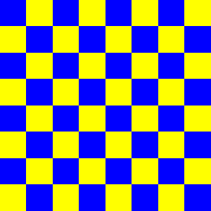
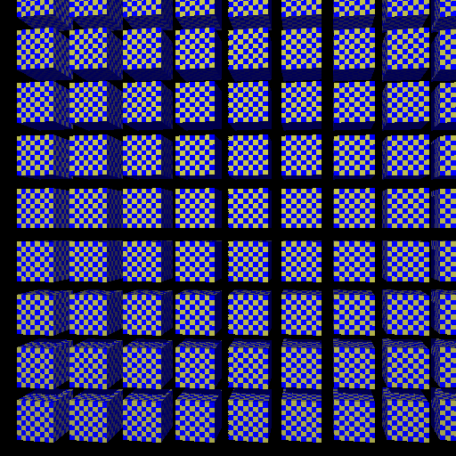
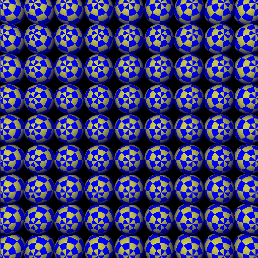
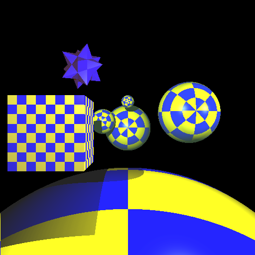
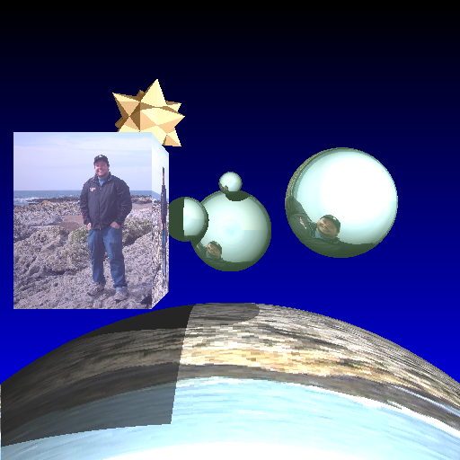
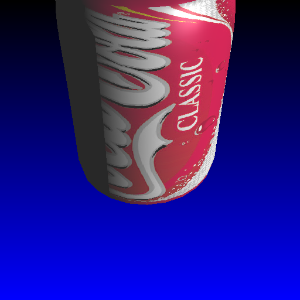

Objective 7:
Texture Mapping
For this objective, I generate UVs for Sphere and Cube primitives, but I do not generate UVs for arbitrary mesh objects. To handle Mesh objects, I support the importing of UV texture coordinates from triangulated mesh OBJ files. These texture coordinates are defined per-vertex and are interpolated across the face of the imported triangle at the time of intersection. The result is the ability to UV map mesh objects correctly.  PNG file to texture map objects with  Grid of boxes  Grid of spheres  Modified Non-Heir scene with UV Mapping  A texture map of me on the beach in Point Reyes, California! :)  Coke logo image UV Mapped onto an imported OBJ mesh file |
Written by: Mike Jutan
CS 488 - Computer Graphics
University of Waterloo